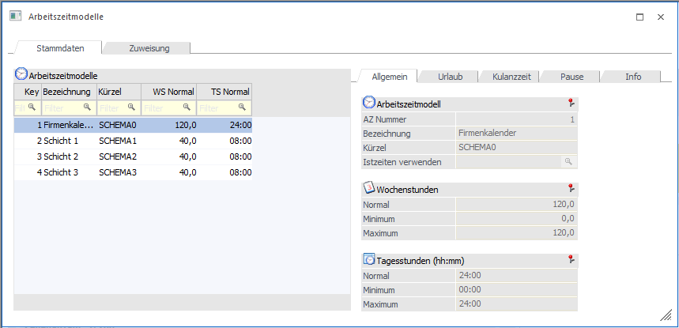
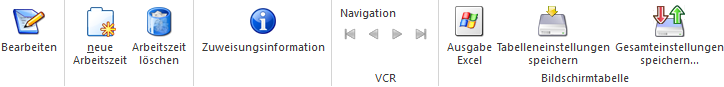
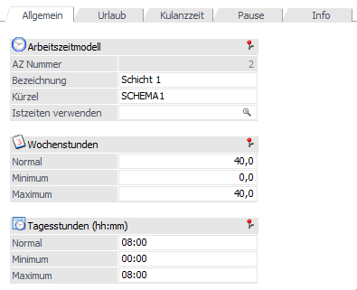
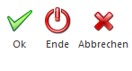
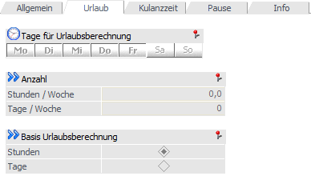
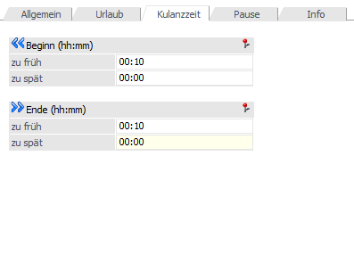
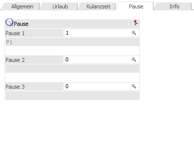
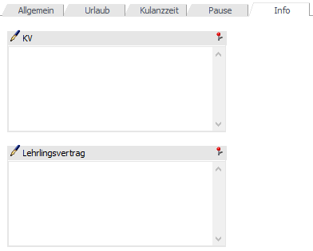

Über den Menüpunkt
1 WinLine INFO
1 SMART
1 Stammdaten
1 Arbeitszeitmodelle
werden die Arbeitszeitmodelle innerhalb eines Unternehmens angelegt. Dabei wird der Menüpunkt in zwei Registern gegliedert:
ü Stammdaten
ü Zuweisung

Hinweis
Bei einem Update auf die Version 11.0 werden auf Basis des Produktionskalenders automatisch Arbeitszeitmodelle angelegt und entsprechend beim Arbeitnehmer laut Kalenderzuteilung zugeordnet. Die Arbeitszeitmodelle und die Zuordnung der Arbeitnehmer können, wenn die entsprechende Berechtigung vorhanden ist, bearbeitet bzw. editiert werden.
Arbeitszeitmodelle
Folgende Spalten sind reine Informationsfelder. Sobald ein Arbeitszeitmodell angelegt ist, wird in diesem Bereich die Zusammenfassung des Arbeitszeitmodelles angezeigt. Innerhalb der Spaltenüberschrift kann nach Bezeichnungen usw. gesucht werden.
Ø Allgemein
Ø Key
Ø Bezeichnung
Ø Kürzel
Ø WS Normal
Ø TS Normal
Buttons

Ø Bearbeiten
Durch Drücken des Buttons "Bearbeiten" können bestehende Arbeitszeitmodelle editiert werden.
Ø Neue Arbeitszeit
Mit dem Button "neue Arbeitszeit" kann ein neues Arbeitszeitmodell angelegt werden.
Ø Arbeitszeit löschen
Beim Drücken des Buttons "Arbeitszeit löschen" wird das ausgewählte Arbeitszeitmodelle gelöscht.
Ø Zuweisungsinformation
Über den Button "Zuweisungsinformation" wird am Bildschirm eine Liste mit jenen Arbeitnehmern bzw. Mitarbeiter angezeigt, welche noch kein Arbeitszeitmodell zugordnet haben.
Ø Navigation
Über die sogenannte VCR-Buttonleiste kann durch Mausklick zwischen den Arbeitszeitmodellen geblättert werden. Damit auf diese Weise auch Daten kontrolliert und geändert werden können, kann mit der Tastenkombination SHIFT + F5 eine Zwischenspeicherung der Daten (Daten werden gespeichert, der Inhalt in den Masken bleibt bestehen, und auch der Focus bleibt im letzten veränderten Feld stehen) durchgeführt werden.
ü  Damit kann
der erste Datensatz angesprochen werden.
Damit kann
der erste Datensatz angesprochen werden.
ü  Damit kann
der vorherige Datensatz angesprochen werden.
Damit kann
der vorherige Datensatz angesprochen werden.
ü  Damit kann
der nächste Datensatz angesprochen werden.
Damit kann
der nächste Datensatz angesprochen werden.
ü  Damit kann
der letzte Datensatz angesprochen werden.
Damit kann
der letzte Datensatz angesprochen werden.
Hinweis
Die Navigation steht nur im Register "Zuweisung" zur Verfügung.
Ø Ausgabe Excel
Der Inhalt der Fakturentabelle kann in eine Excel-Tabelle ausgegeben werden.
Ø Tabelleneinstellungen speichern
Die Spalten einer Tabelle können grundsätzlich an beliebige Positionen verschoben, bzw. in der Breite entsprechend angepasst werden. Durch Anwahl des Buttons "Tabelleneinstellungen speichern" werden die Einstellungen benutzerspezifisch gespeichert und bei dem nächsten Aufruf des Programmpunktes wieder vorgeschlagen.
Ø Gesamteinstellungen speichern
Im Gegensatz zu "Tabelleneinstellungen speichern" können mit "Gesamteinstellungen speichern" mehrere Tabellenaufbauten gespeichert und nach Wunsch geladen werden. Zusätzlich werden Sonderfunktionen der Tabelle (z.B. "Spalte gruppieren") ebenfalls bei der Speicherung bedacht.
Ø Infos
Über einen Link können Informationen für das Modul WinLine SMART TIME aufgerufen werde. Bei erstmaliger Öffnung des Menüpunktes wird der Link automatisch aufgerufen.
Das Register Stammdaten besteht aus 4 weiteren Registern:
ü Allgemein
ü Urlaub
ü Kulanzzeit
ü Pause
ü Info
Allgemein

Ø AZ Nummer
Sobald der Button "neue Arbeitszeit" gedrückt wird, wird die AZ-Nummer automatisch vergeben und kann nicht editiert werden.
Ø Bezeichnung
Eingabe der Bezeichnung des Arbeitszeitmodells.
Ø Kürzel
Eingabe eines Kurzcodes fürs Arbeitszeitmodell.
Ø Istzeit verwenden
Über den Matchcode kann eine Zeitart vom Typ "Istzeit" ausgewählt werden. Die ausgewählte Istzeit kann bei der Arbeitszeitprüfung herangezogen werden.
Ø Wochenstunden Normal
Ø Wochenstunden Minimum
Ø Wochenstunden Maximum
Eingabe der entsprechend Wochenstundenanzahl. Die eingetragenen Stunden werden bei der Arbeitszeitprüfung herangezogen.
Ø Tagesstunden Normal
Ø Tagesstunden Minimum
Ø Tagesstunden Maximum
Eingabe der Tagesstundenanzahl. Die eingetragenen Stunden werden für die Arbeitszeitprüfung benötigt.
Buttons

Ø Ok
Durch Anklicken des OK-Buttons wird das Arbeitszeitmodell bzw. die Änderungen gespeichert
Ø Ende
Damit wird das Fenster geschlossen.
Ø Abbrechen
Durch Betätigen des Abbruch-Buttons werden alle eingetragenen Werte gelöscht.
Urlaub

Ø Tage für Urlaubsberechnung
Es werden jene Wochentage ausgewählt bzw. definiert, welche für die Urlaubsberechnung gezählt werden sollen.
Ø Anzahl Stunden/Woche
Ø Anzahl Tage/Woche
Eintragung der Stunden bzw. Tage pro Woche für den Urlaub.
Ø Basis Urlaubsberechnung
Auswahl auf welcher Basis die Urlaubsberechnung durchgeführt werden soll, dabei stehen folgende Optionen zur Verfügung:
ü Stunden
ü Tage
Hinweis:
Derzeit haben die hinterlegten Informationen noch keine Auswirkungen auf den LOHN bzw. steht noch keine Funktion dahinter.
Kulanzzeit

Ø Beginn zu früh / Beginn zu spät
Eintragung der Kulanzzeit für den Beginn der Ist-/Arbeitszeit, d.h. wie viele Minuten usw. darf ein Arbeitnehmer bzw. Mitarbeiter zu früh oder zu spät beginnen ohne dass seine Ist-/Arbeitszeit unter- oder überschritten wird.
Ø Ende zu früh / Ende zu spät
Eintragung der Kulanzzeit für das Ende der Ist-/Arbeitszeit, d.h. wie viele Minuten usw. darf ein Arbeitnehmer bzw. Mitarbeiter zu früh oder zu spät den Arbeitstag beenden ohne dass seine Ist-/Arbeitszeit unter- oder überschritten wird.
Hinweis
Die Kulanzzeiten werden in der Arbeitszeitprüfung berücksichtigt.
Pause

Ø Pause
Es können bis zu 3 Pausen pro Arbeitszeitmodell hinterlegt werden. Die Pausen werden unter dem Menüpunkt SMART/Stammdaten/Pausenstamm angelegt.
Info

Ø KV / Lehrlingsvertrag
In diesen beiden Feldern können Notizen bzw. Informationen oder eine Zusammenfassung bezüglich der Verträge erfasst werden.